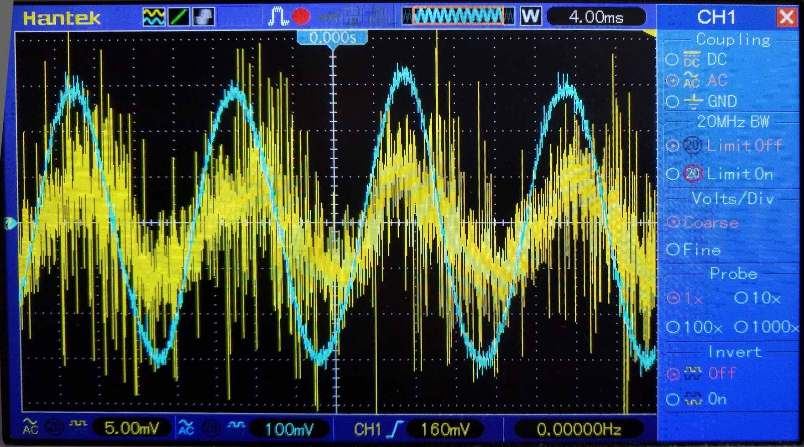

Repair of a HK Audio Elias PX 115 Sub A.
400 W 15" subwoofer in need of a replacement gain potentiometer.
This is going to be a wild ride five minutes of your life you'll never get back.
Task Brief
I was given the amplifier module from an HK subwoofer as a repair project for the Christmas holidays.
The client owns another three of this model sub, so if the fault is difficult to track down, another one could be borrowed to compare measurements against.
Luckily, this wasn't needed and the repair was completely mechanical in nature.
This unit had not been working for over two years so the following issues are all I had to go on.
- No sound output.
- Broken gain potentiometer.
- Missing screws.
HK Audio have a great
service center and stock spare parts for even this 20 year old product!
Being a reputable German manufacturer does have it's downsides though, as I had to find an alternative distributor who would ship to the UK.
HK Audio recommended
JHS, who had the required parts.
Repair
The amplifer module is fairly well protected on the back/bottom of the speaker cabinet so for it to be this scratched, it must have been knocking around for some time.
I gave the edge a clean and touch-up with some fresh paint.
The screws on the XLR connectors were missing when I received the unit.
10 points to whoever can guess what head type the replacements have.
The IEC socket was loose I repaired it and cleaned the flux residue off with my normal technique of lint-free tissue, alcohol and a toothbrush.
What an attractive potentiometer.
The amplifier was paired up with an alternative 8 Ω passive subwoofer and the output waveform inspected.

The amplification PCB appears to be a standard model used in stereo and bridged configurations across multiple product lines.
The bridged output was tested using at multiple points in and out of the rated frequency response range.
Both positive outputs act as expected and drive at the same magnitude but in opposite polarity, so I can be confident the output stage is operating normally.
Even when driving 70 V peak-to-peak into 8 Ω (300 W) as seen below.
To mount the amplifier assembly inside the speaker cabinet, No. 8 captive nuts (or speed clips) are used... Assuming they hadn't gone missing.
As usual, replacements were purchased (10 for £2.05) and luckily I already had the matching screws in stock.
Reassembly
The amplifier module was brought back on site and installed, ready to rattle the local pub once again.
Conclusion
TL;DL: It didn't work and now it does. Why are you still reading this? Go outside and play.
The full list of repaired issues is as follows:
- Replaced gain potentiometer.
- Replaced gain knob cap.
- Procured replacement fasteners for PCBs and amp module.
- Re-soldered loose mains input terminals and speaker output terminals.
- Re-soldered XLR "through" connector.
- Clean and remove duct tape and label residue.
- Touched-up paint on amplifier case.
- Fabricated replacement ground lift button cap.
- Mounted amp back in speaker cabinet and bolted driver back in.
© James Baber 2020.